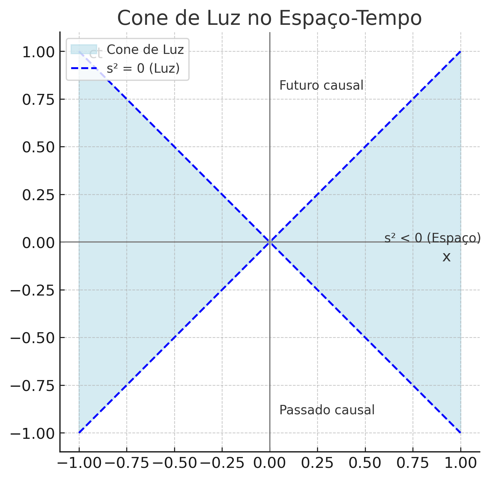

library(plotly)
velocidade <- seq(0, 0.99, by = 0.01)
tempo_dilatado <- 1 / sqrt(1 - velocidade^2)
plot_ly(x = ~velocidade, y = ~tempo_dilatado,
type = "scatter", mode = "lines",
line = list(width = 3)) %>%
layout(title = "Dilatação do Tempo vs Velocidade Relativa",
xaxis = list(title = "v/c"),
yaxis = list(title = "Œît / Œît‚ÇÄ"))üìò üõ∞Ô∏è A Teoria da Relatividade Especial ‚Äî Uma Visão Mais Acad√™mica
física
relatividade
relatividade especial
einstein
Entenda passo a passo os fundamentos da teoria de Einstein: postulados, transformações, dilatação do tempo, paradoxo dos gêmeos, equivalência massa-energia e muito mais.
‚Üê Voltar para o Guia de Leitura de Relatividade Especial üß≠ üìö üõ∞Ô∏è
‚Üê Voltar para o Guia de Leitura de F√≠sica üß≠ ‚öõÔ∏è
← Voltar para a Seção de Física ⚛️
1 üìò üõ∞Ô∏è A Teoria da Relatividade Especial ‚Äì Uma Visão Mais Acad√™mica
1.1 Introdução Histórica
Em 1905, Albert Einstein publicou o artigo “Sobre a eletrodinâmica dos corpos em movimento”, desafiando as noções clássicas de espaço e tempo. Essa nova abordagem — chamada Relatividade Especial — baseia-se em dois postulados simples, mas revolucionários, com consequências surpreendentes para o entendimento do universo.
1.2 Postulados da Relatividade Especial
Princípio da Relatividade
> ℹ️ As leis da física são as mesmas para todos os observadores inerciais (sem aceleração).Constância da Velocidade da Luz
> ⚠️ A luz se propaga no vácuo com velocidade constante \(c \approx 3{,}00 \times 10^8 \, \text{m/s}\), independentemente do movimento da fonte ou do observador.
1.3 Transformações de Lorentz
A transformação de Galileu (usada na mecânica clássica) não preserva a velocidade da luz. Einstein introduziu as Transformações de Lorentz, que descrevem como espaço e tempo se transformam entre observadores em movimento relativo:
\[ \boxed{ \begin{aligned} x' &= \gamma (x - vt) \\ t' &= \gamma \left( t - \frac{vx}{c^2} \right) \end{aligned} \quad \text{onde } \gamma = \frac{1}{\sqrt{1 - \frac{v^2}{c^2}}} } \]
✅ Essas transformações garantem que a velocidade da luz permanece \(c\) em todos os referenciais.
1.4 Dilatação do Tempo: O Que É e Como Funciona
Se um relógio está em movimento em relação a um observador, ele parece andar mais devagar.
\[ \boxed{ \Delta t = \frac{\Delta t_0}{\sqrt{1 - \frac{v^2}{c^2}}} } \]
- \(\Delta t_0\): tempo próprio (medido no referencial em repouso com o evento).
- \(\Delta t\): tempo medido por um observador externo.
ℹ️ Em velocidades muito pequenas comparadas a \(c\), o efeito é desprezível — mas se torna marcante à medida que \(v\) se aproxima da velocidade da luz.
1.5 Gráfico Interativo: Dilatação do Tempo
Vamos visualizar como o tempo se dilata com a velocidade relativa. Suponha \(\Delta t_0 = 1\) segundo.
1.6 Gráfico: Contração do Comprimento
De acordo com a Relatividade Especial, um objeto em movimento em relação a um observador parecerá mais curto ao longo da direção do movimento. Essa é a contração do comprimento.
A fórmula é:
\[ \boxed{ L = L_0 \sqrt{1 - \frac{v^2}{c^2}} } \]
- \(L_0\): comprimento próprio (medido no referencial do objeto).
- \(L\): comprimento medido por um observador externo.
Vamos visualizar esse efeito graficamente com \(L_0 = 1\) unidade:
library(plotly)
v <- seq(0, 0.99, by = 0.01)
L0 <- 1
L <- L0 * sqrt(1 - v^2)
plot_ly(x = ~v, y = ~L, type = "scatter", mode = "lines",
line = list(width = 3, color = "blue")) %>%
layout(title = "Contração do Comprimento vs Velocidade Relativa",
xaxis = list(title = "v/c"),
yaxis = list(title = "L / L₀"))⚠️ A contração do comprimento só ocorre na direção do movimento e não pode ser percebida por quem está no mesmo referencial do objeto.
1.7 O Paradoxo dos Gêmeos
Dois irmãos gêmeos: um fica na Terra, o outro viaja a uma velocidade próxima de \(c\) e retorna.
Resultado: o gêmeo viajante envelhece menos — o tempo passou mais devagar para ele.
❗ Não é uma contradição. O gêmeo viajante muda de referencial (aceleração/desaceleração), o que quebra a simetria do sistema.
Esse efeito foi confirmado experimentalmente com relógios atômicos em aviões e satélites.
1.8 Comparação com a Mecânica Clássica
| Conceito | Mecânica Clássica (Newton) | Relatividade Especial (Einstein) |
|---|---|---|
| Tempo | Absoluto | Relativo ao referencial |
| Simultaneidade | Absoluta | Relativa |
| Transformações | Galileanas | Lorentz |
| Velocidade da luz | Variável | Constante para todos os observadores |
| Soma de velocidades | Aditiva | Não aditiva |
| Massa | Constante | Aumenta com a velocidade (relativística) |
| Energia cinética | \(\frac{1}{2}mv^2\) | \(E = \gamma mc^2 - mc^2\) |
| Equivalência massa-energia | Inexistente | \(E = mc^2\) |
1.9 Intervalo Invariante e Espaço-Tempo
Um dos conceitos centrais da Relatividade Especial é o intervalo espaço-temporal entre dois eventos. Assim como a distância euclidiana entre dois pontos é invariante na geometria clássica, o intervalo entre dois eventos é invariante em todos os referenciais inerciais.
A fórmula do intervalo (em 1D) é:
\[ \boxed{ s^2 = c^2 \Delta t^2 - \Delta x^2 } \]
1.9.1 Interpretação do Intervalo
| Valor de \(s^2\) | Tipo de intervalo | Significado físico |
|---|---|---|
| \(s^2 > 0\) | Temporal | Os eventos podem estar causalmente conectados. |
| \(s^2 < 0\) | Espacial | Os eventos estão muito distantes no espaço para influência causal. |
| \(s^2 = 0\) | Luz (nulo) | Os eventos são conectados por um sinal luminoso. |
✅ O intervalo é invariante: permanece o mesmo em todos os sistemas inerciais, mesmo que \(\Delta t\) e \(\Delta x\) variem.
1.9.2 O Espaço-Tempo de Minkowski
A Relatividade Especial funde espaço e tempo em uma única entidade: o espaço-tempo de Minkowski. Nele, cada evento é descrito por coordenadas \((ct, x, y, z)\).
- A geometria do espaço-tempo é pseudo-euclidiana, com assinatura diferente da geometria euclidiana.
- Isso implica que o “quadrado da distância” entre eventos pode ser positivo, negativo ou nulo.
1.9.3 Cone de Luz e Causalidade
O cone de luz define os limites da causalidade. Eventos dentro do cone podem influenciar ou ser influenciados pelo evento na origem. Eventos fora dele estão separados por intervalos espaciais.
1.9.4 Consequências Importantes
- A separação causal entre eventos depende do intervalo invariante.
- A noção de tempo absoluto não é mais válida.
- Preservar a causalidade exige que nenhuma informação viaje fora do cone de luz.
1.9.5 Representação Gráfica: Cone de Luz
A figura abaixo mostra o cone de luz em um diagrama espaço-tempo:

✅ O cone de luz delimita a fronteira da causalidade no espaço-tempo de Minkowski.
1.10 Equivalência Massa-Energia e Aplicações Práticas
1.10.1 A Fórmula Famosa
\[ \boxed{E = mc^2} \]
Essa equação mostra que massa é energia condensada.
1.10.2 Aplicações:
- ⚛️ Energia nuclear (reatores e bombas);
- üåû Fusão no Sol;
- üõ∞Ô∏è Corre√ß√µes de tempo em sat√©lites GPS;
- ü߆ PET scans na medicina;
- üí• Estudo de part√≠culas e colisores.
ℹ️ Curiosidade: 1 grama de matéria convertida integralmente em energia equivale a 90 trilhões de joules!
1.11 Conclusão e Reflexões Finais
A Relatividade Especial transformou nossa visão do universo. Tempo e espaço são interligados, dependem do observador e da velocidade. Sua precisão foi verificada experimentalmente em dezenas de situações.
✅ Ela continua sendo essencial na ciência moderna e base para teorias mais amplas como a Relatividade Geral e a Física de Partículas.
1.12 ❌ Mitos Comuns sobre a Relatividade
| Mito | Realidade |
|---|---|
| “Nada pode ir mais rápido que a luz” | Verdade — no vácuo. Mas há efeitos aparentes ou em meios materiais. |
| “O tempo para completamente na velocidade da luz” | Correto para objetos com massa (que não atingem \(c\)). |
| “Relatividade é só teoria” | Errado — é uma teoria comprovada por muitos experimentos. |
2 üìö Refer√™ncia principal:
Resnick, R. (1968). Introduction to Special Relativity. Wiley.
⚠️ Em próximos posts iremos explorar com mais detalhes esses conceitos.
3 üß≠ üìò üõ∞Ô∏è Guia de Leitura ‚Äì Relatividade Especial
Nota
Leu até aqui? Consulte o guia completo de leitura
üëâ üß≠ üìò üõ∞Ô∏è Guia de Leitura ‚Äî Relatividade Especial
‚Üê Voltar para o Guia de Leitura de Relatividade Especial üß≠ üìö üõ∞Ô∏è
‚Üê Voltar para o Guia de Leitura de F√≠sica üß≠ ‚öõÔ∏è
← Voltar para a Seção de Física ⚛️
üîù Voltar ao Topo
Blog do Marcellini — Explorando a Física com Rigor e Beleza.
Nota
Criado por Blog do Marcellini com ❤️ e código.
4 üîó Links Úteis
- üßë‚Äçüè´ Sobre o Blog
- üíª GitHub do Projeto
- üì¨ Contato por E-mail